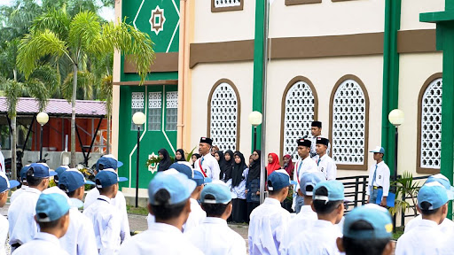
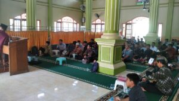
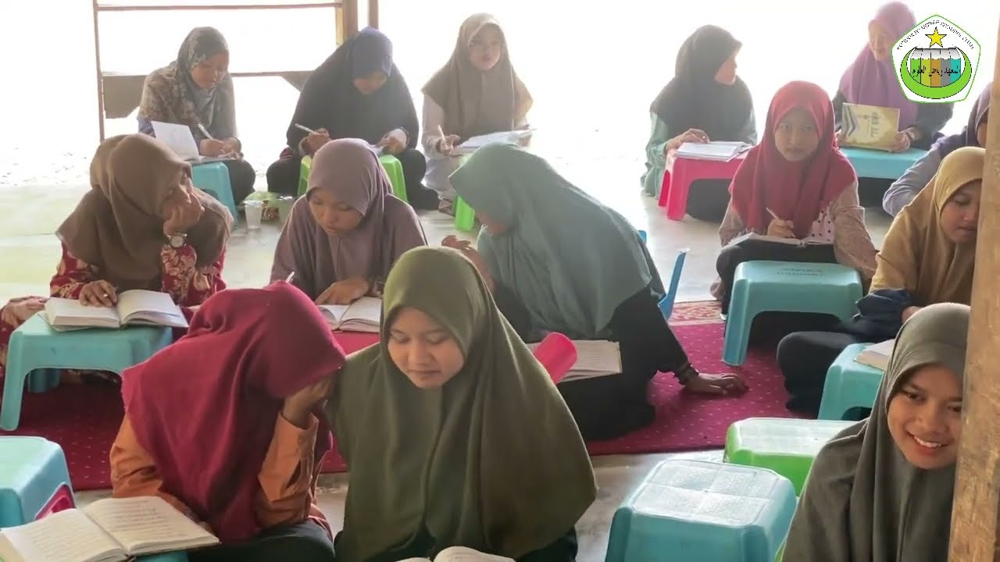
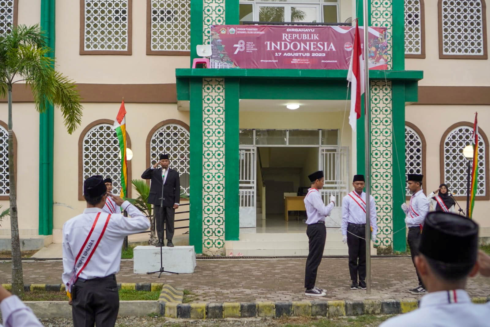
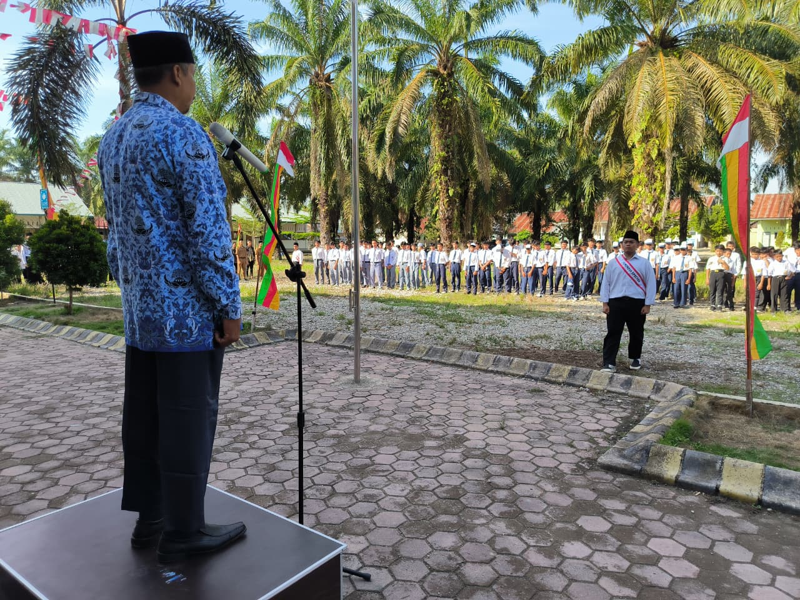
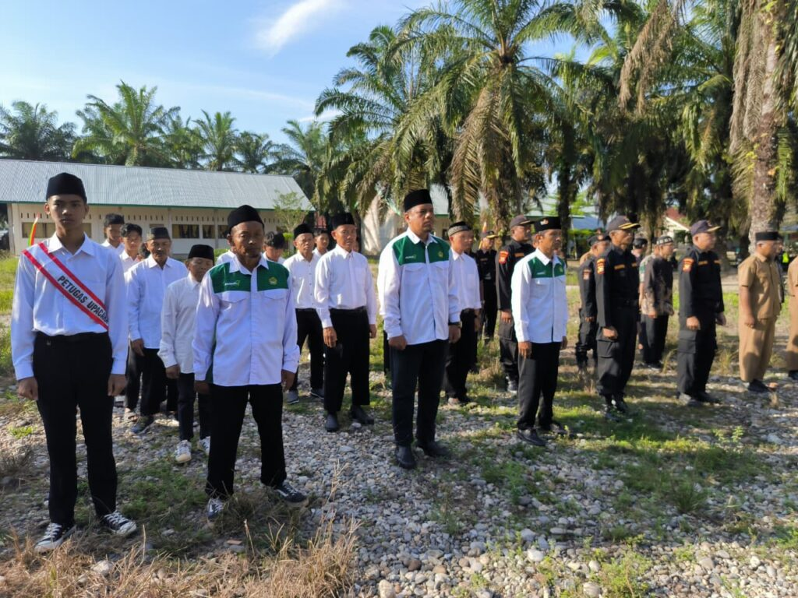
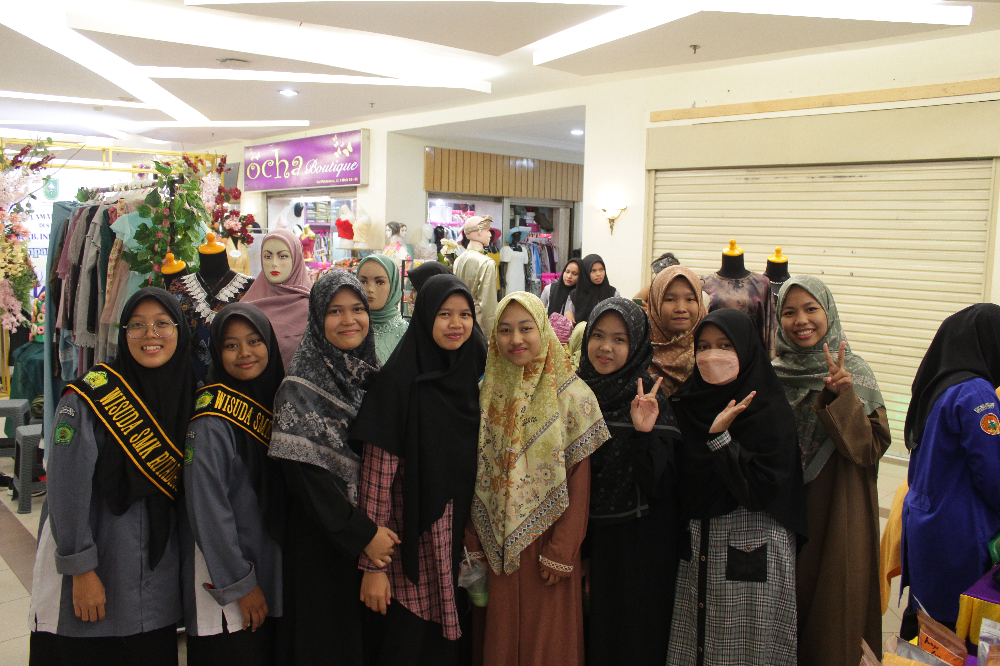
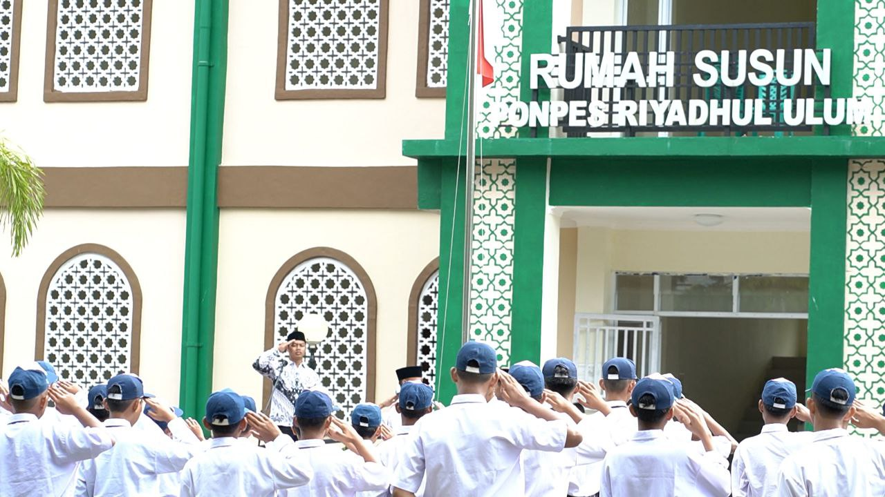

Galeri Kegiatan











Pusat pendidikan Islam yang memadukan ilmu agama dan pengetahuan umum secara seimbang.
Pelajari Lebih Lanjut
Pondok Pesantren Riyadhul Ulum yang berdiri sejak 7 Juli 2014
hadir sebagai lembaga pendidikan Islam yang berkomitmen mencetak generasi
yang cerdas, berakhlakul karimah, serta siap menghadapi tantangan zaman.
Kami memadukan pendidikan agama yang kuat dengan ilmu pengetahuan umum
secara seimbang, sehingga santri tidak hanya unggul dalam hafalan dan
pemahaman syariat, tetapi juga memiliki wawasan luas, keterampilan,
dan kemampuan akademik yang kompetitif.
Dengan program pembentukan 29 karakter, kami menanamkan
nilai disiplin, tanggung jawab, kemandirian, kepemimpinan, serta
semangat ukhuwah Islamiyah dalam kehidupan sehari-hari santri.
Didukung oleh tenaga pengajar yang profesional dan lingkungan yang
kondusif, Pondok Pesantren Riyadhul Ulum menjadi tempat terbaik untuk
membentuk pribadi yang berilmu, beriman, dan bermanfaat bagi masyarakat.
Bersama kami, mari wujudkan generasi Qur’ani yang berprestasi,
berkarakter, dan siap menjadi pemimpin masa depan.
Pondok Pesantren Riyadhul Ulum adalah pilihan utama bagi orang tua yang menginginkan pendidikan berkualitas
bagi putra-putrinya. Kami tidak hanya fokus pada pembelajaran agama, tetapi juga pengembangan karakter,
kepemimpinan, dan kemampuan intelektual yang akan membuka banyak peluang masa depan.
Dengan fasilitas lengkap dan lingkungan yang kondusif, santri didorong untuk tumbuh menjadi pribadi yang disiplin,
kreatif, dan penuh tanggung jawab. Program kami dirancang agar setiap santri mampu menguasai ilmu agama dan
pengetahuan umum secara seimbang, sehingga siap menghadapi tantangan global.
Bergabunglah dengan kami dan rasakan pengalaman belajar yang inspiratif, penuh semangat, dan membawa keberkahan
untuk masa depan anak-anak Anda.

Selain program kepesantrenan, Pondok Pesantren Riyadhul Ulum juga
menyelenggarakan pendidikan formal melalui SMP IT
dan SMK Riyadhul Ulum dengan sistem boarding school
yang terintegrasi.
SMP IT Riyadhul Ulum dirancang untuk membangun fondasi akademik yang kuat
sekaligus menanamkan nilai-nilai keislaman sejak dini. Kurikulum terpadu
menggabungkan pelajaran umum, tahfidz Al-Qur’an, pembinaan karakter,
serta pengembangan bakat dan minat siswa.
SMK Riyadhul Ulum menghadirkan pendidikan berbasis keterampilan dan
teknologi yang relevan dengan kebutuhan dunia kerja. Siswa dibekali
kompetensi profesional, keterampilan praktis, serta pembinaan akhlak
agar siap bersaing dan tetap berpegang teguh pada nilai-nilai Islam.
Dengan lingkungan belajar yang disiplin, aman, dan religius,
kami berkomitmen mencetak lulusan yang tidak hanya cerdas secara
intelektual, tetapi juga matang secara spiritual dan sosial.
Bergabunglah bersama kami dan wujudkan masa depan gemilang
untuk putra-putri Anda melalui pendidikan yang unggul,
berkarakter, dan penuh keberkahan.







Membentuk kepribadian mulia melalui pembiasaan adab dan etika islami setiap hari.
Pendalaman ilmu agama melalui pembelajaran Fiqih, Tafsir, dan Hadits secara bertahap.
Suasana belajar yang nyaman dan suportif untuk mendukung tumbuh kembang santri.
Mengasah kemampuan komunikasi internasional untuk memperluas wawasan global.
Wadah pengembangan bakat olahraga, kerjasama tim, dan kesehatan fisik siswa.
Melatih kemandirian, kedisiplinan, dan pertahanan diri melalui seni bela diri tradisional.
Inovasi belajar interaktif menggunakan Interactive Flat Panel untuk visualisasi modern.